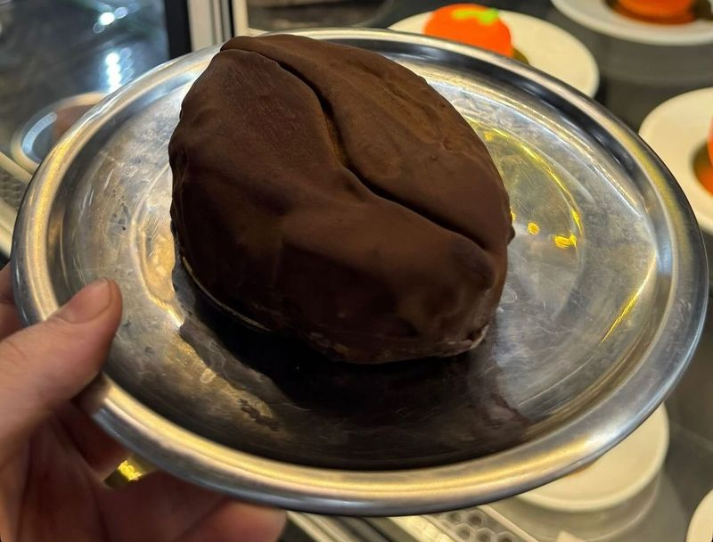
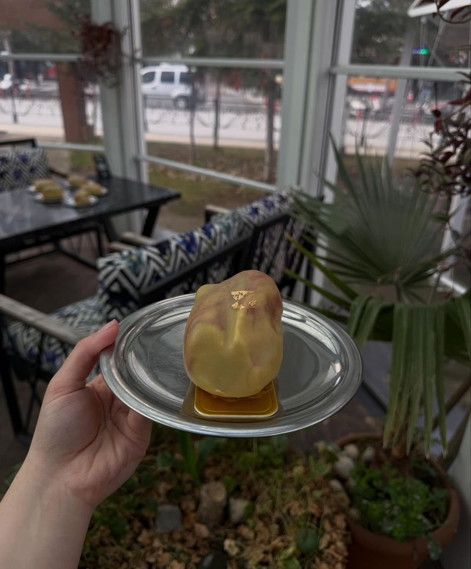
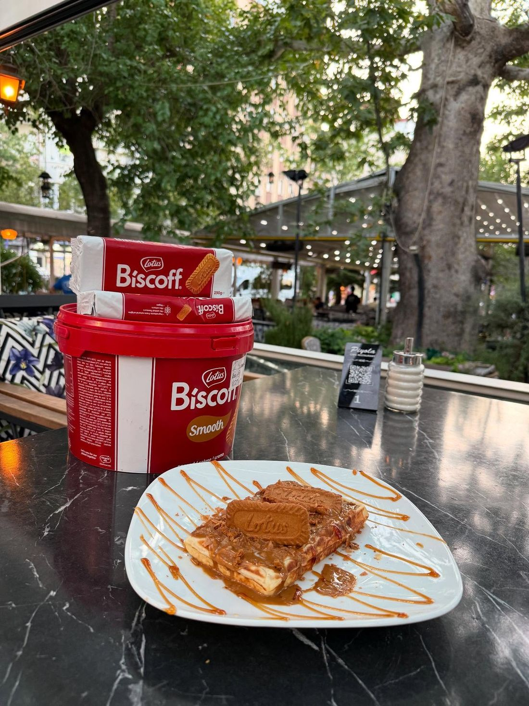
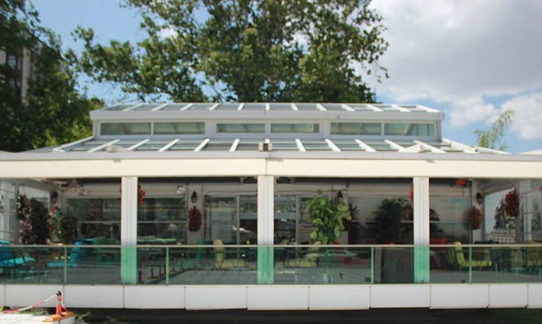

01
Frambuaz
- Belçika beyaz çikolatalı ipeksi krema
- Frambuazlı akışkan dolgu
- Kıtır kıtır çikolata kaplama
Belediye önü · Hasan Gürbüz Parkı · Isparta
Sabah serpme kahvaltıyla açılır, gece yarısı kapanır. Arada vitrin, kahve ve ağaçların gölgesi.
Her gün 09:00 – 00:00
Piyola, Isparta Belediyesi'nin önündeki Hasan Gürbüz Parkı'nda, cam tavanlı beyaz bir köşkte. İçeride camların ardında, dışarıda ağaçların altında oturulur.
Vitrin
Cedric Grolet'nin Fransız tatlılarından esinlenen, meyve ya da kahve çekirdeği biçiminde pastalar. Tarifler Piyola'nın kendi anlatımıyla.


Vitrinden daha fazlası





Kareler

Köşk
Kapalı bölüm cam tavanlı ve etrafı camla çevrili; gün ışığı içeri doğrudan düşer. Dışarıda, parkın ağaçlarının gölgesinde bahçe masaları var.
Ziyaretçilerin en çok andığı şeyler: güler yüzlü personel ve hızlı servis.

Ziyaret
Her gün 09:00 – 00:00 arası açık.